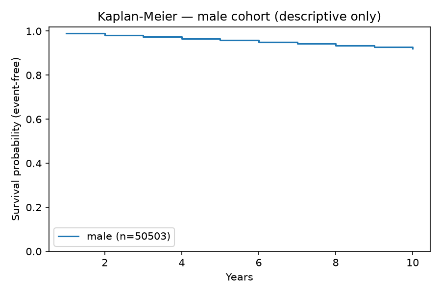
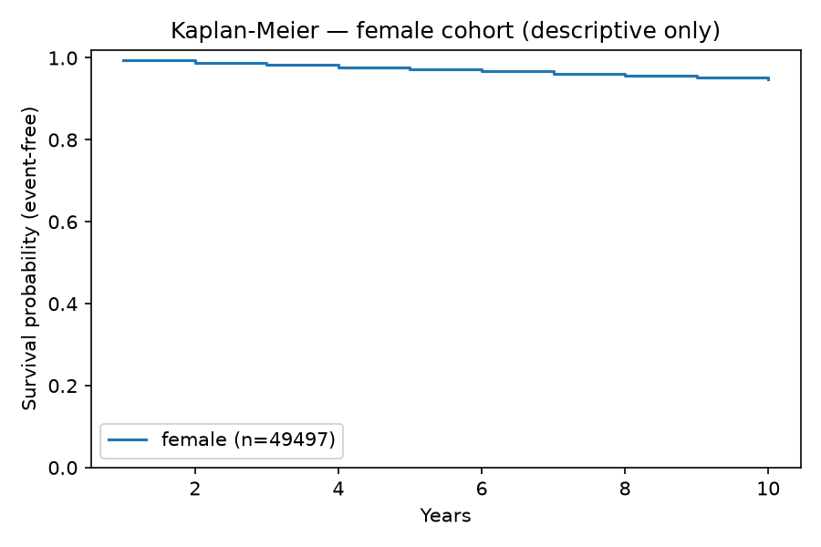
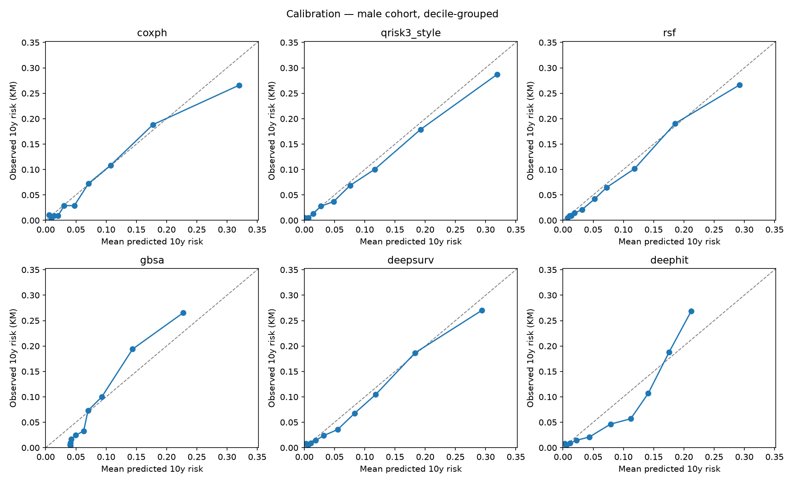
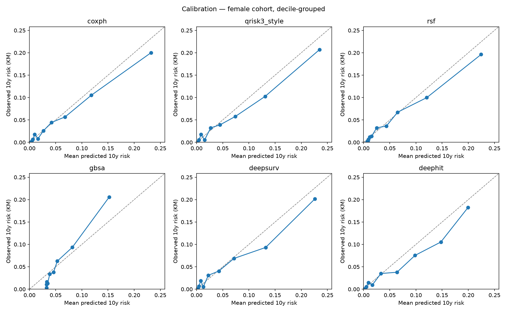
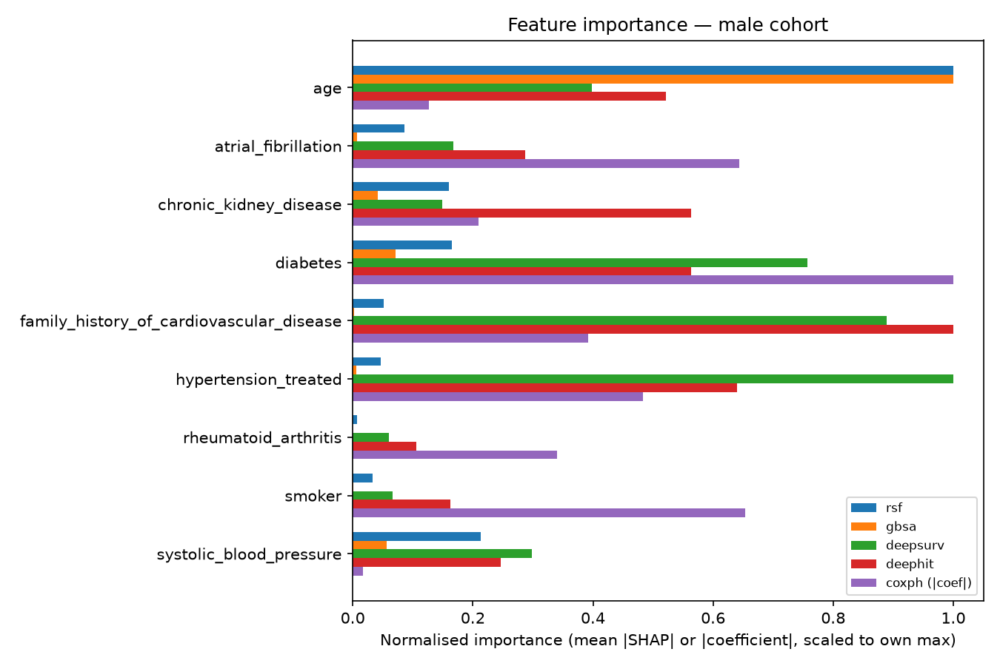
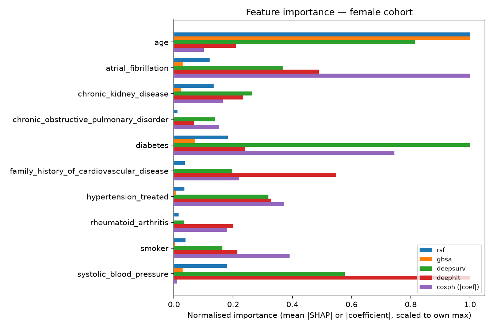
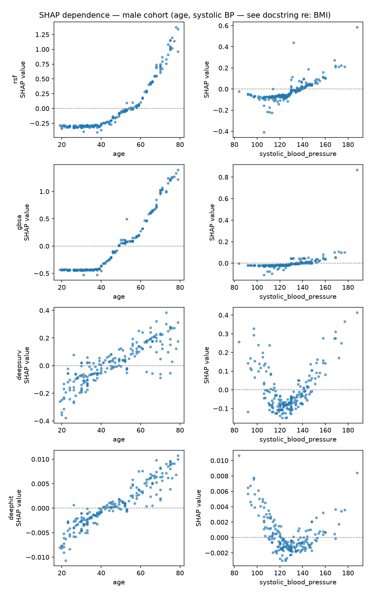
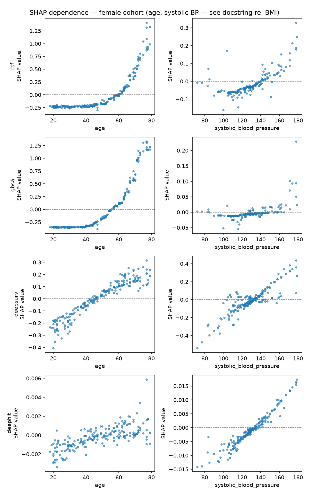

Sex-stratified survival modelling
Benchmarking six sex-stratified survival models — CoxPH, a QRISK3-style clinical score, Random Survival Forest, Gradient-Boosting Survival Analysis, DeepSurv, and DeepHit — on discrimination, calibration, and explainability.
Harrell's C-index and Uno's IPCW C-statistic (discrimination), and the Brier score (calibration), all with bootstrap 95% confidence intervals from 1,000 resamples of the held-out test set. The row beneath each model shows its effect size vs. the sex-specific CoxPH baseline.
| Model | C-index (95% CI) | Uno's C (95% CI) | Brier score (95% CI) |
|---|---|---|---|
| Male cohort | |||
| CoxPH | 0.810 (0.794–0.824) | 0.813 (0.796–0.828) | 0.0390 (0.0360–0.0422) |
| — (baseline) | |||
| QRISK3-style | 0.820 (0.806–0.834) | 0.824 (0.810–0.839) | 0.0588 (0.0548–0.0628)¹ |
| — (baseline) | |||
| Random Survival Forest | 0.807 (0.792–0.822) | 0.811 (0.794–0.826) | 0.0392 (0.0362–0.0424) |
| -0.003 vs CoxPH | |||
| Gradient-Boosting Survival | 0.809 (0.794–0.823) | 0.813 (0.797–0.828) | 0.0398 (0.0366–0.0432) |
| -0.001 vs CoxPH | |||
| DeepSurv | 0.809 (0.793–0.824) | 0.812 (0.795–0.827) | 0.0392 (0.0362–0.0424) |
| -0.001 vs CoxPH | |||
| DeepHit | 0.808 (0.793–0.823) | 0.812 (0.795–0.827) | 0.0399 (0.0367–0.0432) |
| -0.001 vs CoxPH | |||
| Female cohort | |||
| CoxPH | 0.819 (0.801–0.838) | 0.821 (0.801–0.839) | 0.0265 (0.0238–0.0291) |
| — (baseline) | |||
| QRISK3-style | 0.823 (0.806–0.841) | 0.826 (0.807–0.843) | 0.0407 (0.0375–0.0441)¹ |
| — (baseline) | |||
| Random Survival Forest | 0.813 (0.794–0.831) | 0.815 (0.795–0.833) | 0.0266 (0.0239–0.0292) |
| -0.006 vs CoxPH † | |||
| Gradient-Boosting Survival | 0.814 (0.795–0.833) | 0.817 (0.796–0.836) | 0.0267 (0.0240–0.0294) |
| -0.005 vs CoxPH † | |||
| DeepSurv | 0.815 (0.797–0.833) | 0.817 (0.797–0.835) | 0.0266 (0.0239–0.0293) |
| -0.004 vs CoxPH | |||
| DeepHit | 0.811 (0.794–0.829) | 0.813 (0.794–0.831) | 0.0267 (0.0241–0.0294) |
| -0.008 vs CoxPH † | |||
† 95% CI on the delta excludes zero (statistically distinguishable from the CoxPH baseline). ¹ QRISK3-style is a fixed single-horizon clinical formula, not a fitted survival model — its Brier score is evaluated at a single ~10-year timepoint, not integrated over the full follow-up like the other five models.
Feature selection (multicollinearity screening + validation-tuned LASSO) ran independently per sex; the surviving set is used identically across CoxPH, RSF, GBSA, DeepSurv, and DeepHit for that sex. QRISK3-style uses its own fixed clinical predictor set regardless.
This reproduces, in-browser, the exact scoring function used as one of the six baselines
above — the same coefficients, the same fixed inputs, computed the same way as
src/04_baselines.py's qrisk3_style_score(). It's the only one of
the six models that can run client-side: RSF, GBSA, DeepSurv, and DeepHit are fitted
Python/PyTorch models, not portable formulas.
Not a clinical instrument — read before you try it
Updates instantly as you change anything on the left. Higher age, higher blood pressure, and each added condition raise this number; removing them brings it back down — nothing is added up or remembered between changes.








Unstable = the predictor's SHAP-importance rank shifted by more than 2 positions across two independent bootstrap resamples of the training fold. Top-3 overlap = mean count of shared features between each patient's top-3 SHAP and top-3 LIME features (out of 3).
| Male cohort | Random Survival Forest: 1/9 unstable, top-3 overlap 1.38/3 | Gradient-Boosting Survival: 2/9 unstable, top-3 overlap 2.06/3 | DeepSurv: 7/9 unstable, top-3 overlap 1.68/3 | DeepHit: 6/9 unstable, top-3 overlap 0.53/3 |
| Female cohort | Random Survival Forest: 3/10 unstable, top-3 overlap 1.73/3 | Gradient-Boosting Survival: 3/10 unstable, top-3 overlap 2.23/3 | DeepSurv: 6/10 unstable, top-3 overlap 1.40/3 | DeepHit: 5/10 unstable, top-3 overlap 1.50/3 |